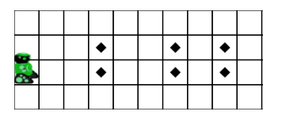
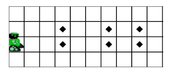
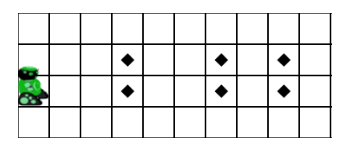
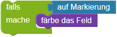
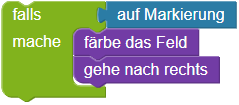
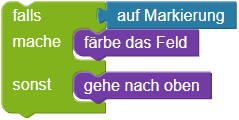

Markierte Felder bemalen


 

Programmiere den Roboter:
Der Roboter soll alle markierten Felder färben.
Es gibt immer zwei markierte Felder übereinander. Dein Roboter muss beide Felder färben, bevor er in die nächste Spalte geht.
Mit
dem Baustein falls,
kannst du prüfen, ob das aktuelle Feld, auf dem der Roboter steht markiert ist, um es dann ggf. zu färben:


Mit
der if-Kontrollanweisung,
kannst du prüfen, ob das aktuelle Feld, auf dem der Roboter steht markiert ist, um es dann ggf. zu färben:
if feldMarkiert():
bemale()
Vergiss nicht, dass du mehrere Anweisungen in
einen falls-Baustein,
einfügen kannst:


Vergiss nicht, dass du mehrere Anweisungen in
eine if-Kontrollanweisung,
einfügen kannst:
if feldMarkiert(): bemale() rechts()
Alle Befehle die nach dem Doppelpunkt eingerückt in Zeilen stehen werden ausgeführt, falls die Bedingung "True" ist. In diese Fall also: Wenn das Feld markiert ist, dann bemahlt der Roboter das Feld und geht einen Schritt nach rechts.
Du kannst
den Baustein falls- sonst
benutzen um verschiedene Anweisung ausführen zu lassen, je nachdem ob das Feld markiert ist oder nicht.


Du kannst
die if/else-Kontrollanweisung
benutzen um verschiedene Anweisung ausführen zu lassen, je nachdem ob das Feld markiert ist oder nicht.
if feldMarkiert():
markiere()
else:
oben()
Alle Befehle, die in der if- bzw. if/else-Kontrollstruktur ausgeführt werden sollen,
müssen eingerückt werden.
Insgesamt muss sich der Roboter 14 mal nach rechts bewegen, um die letzte Markierung zu erreichen.